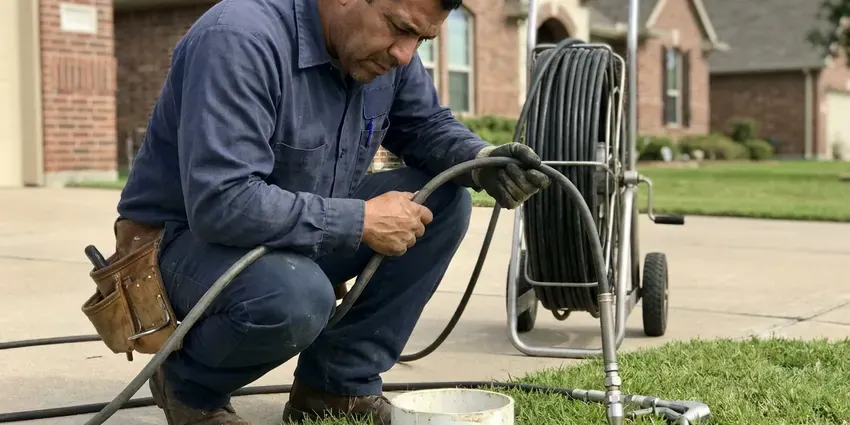

Water Heater Maintenance in Appleton, WI
Protect your investment and extend the lifespan of your water heater in Appleton, WI with expert maintenance from HKV Plumbing.
- Fast, Reliable Service
- Tank and Tankless Service
- Licensed, experienced technicians
- Skilled, Certified Plumbers

Prevent Costly Breakdowns With Maintenance in Appleton, WI.
Our team is standing by to provide the professional service your water heater needs to perform its best.
Water Heater Maintenance in Appleton, WI for Tank and Tankless Systems
HKV Plumbing maintains gas and electric tank water heaters as well as tankless units. We flush sediment, inspect the anode rod, test the temperature and pressure relief valve and check venting, gas connections and burner assemblies.
Our expertise includes:
- Anode rod inspection and replacement with the correct type
- Sediment flush for improved efficiency and lifespan.
- Testing pressure relief valves

Additional Plumbing Maintenance Services in Appleton, WI
Our maintenance and specialty plumbing services in Appleton, WI catch small problems before they become emergencies.


Customers
Why Choose HKV Plumbing for Water Heater Maintenance in Appleton, WI?
Regular maintenance is key to avoiding unexpected water heater failures. Summer humidity brings condensation on cold pipes in basements around Appleton, which can cause drips and musty odors. It protects your investment and keeps a consistent supply of hot water flowing to your home.
- Energy Efficiency, A well-maintained water heater runs more efficiently, using less energy and lowering your monthly utility bills.
- Safety Assurance, We check for gas leaks, carbon monoxide, and proper ventilation, keeping your family safe.
- Prevent Breakdowns, Catching small issues early prevents major, expensive failures and keeps hot water reliable.
Citywide Coverage
HKV Plumbing serves every neighborhood in Appleton and the surrounding areas for water heater maintenance. We understand the varied housing types across Appleton and tailor our maintenance approach to your system.
Experienced Team
Every technician is certified and regularly trained on the latest water heater technologies and maintenance best practices. You can trust our team to deliver precise, knowledgeable service for your water heater in Appleton.
Safety-First Approach
Safety is a priority in all our water heater maintenance services. We follow local Wisconsin plumbing codes and industry best practices so your system runs safely and efficiently, protecting your home and family.
Trusted Certified Appleton Plumbing Services Professionals
At HKV Plumbing, we take pride in providing certified plumbing services throughout Appleton, WI. Backed by recognized industry credentials, our experienced plumbers combine technical skill with genuine customer care. Whether it is repair, installation, or maintenance, we follow strict safety and quality standards to deliver lasting results you can trust.
Call Us Now PHCC Plumbing Contractor Recognition
PHCC Plumbing Contractor Recognition Better Business Bureau (BBB) Accreditation
Better Business Bureau (BBB) Accreditation Angi Certified Pro
Angi Certified Pro ISO 9001 Quality Management Certification
ISO 9001 Quality Management CertificationDependable Water Heater Maintenance Services in Appleton, WI
T&P Valve and Safety Testing in Appleton, WI
The temperature and pressure relief valve keeps your water heater from building unsafe pressure. We test it by lifting the lever and checking that it opens and reseats. A valve that leaks or will not open gets replaced. We also check that the discharge pipe runs to an approved location. Expansion tanks are checked for proper air charge where installed.

Attic and Garage Water Heater Maintenance in Appleton
Many homes have water heaters in garages or attics, where heat, cold and tight access add stress to the unit. Attic units need working drain pans and drain lines to prevent ceiling damage if the tank leaks. We check the pan, drain line, venting and access platform. Garage units should be raised and protected where required for gas appliances. We make sure your setup meets local code.
Anode Rod Inspection and Replacement in Appleton
The anode rod is a sacrificial part in your water heater designed to corrode instead of the tank itself. Depending on your water chemistry, these rods can wear down faster than expected. During maintenance, we inspect the anode rod's condition and recommend replacement if necessary. A healthy anode rod is crucial for preventing rust and extending the lifespan of your water heater tank, saving you from a costly full replacement.
Tankless Water Heater Maintenance in Appleton, WI
Tankless water heaters need specific maintenance, mainly a descaling flush to remove mineral deposits that can restrict flow and reduce efficiency. Our technicians in Appleton, WI use commercial-grade solutions to clean the heat exchanger, so your unit keeps providing endless hot water efficiently. We also inspect the igniter, fan, and exhaust venting for proper performance and safety.
Tankless Water Heater Descaling in Appleton
Tankless units are particularly sensitive to hard water scale, which clogs the heat exchanger and triggers error codes. We isolate the unit with its service valves and circulate a descaling solution with a pump for the recommended time. We also clean the inlet water filter and check the unit's error history. Most manufacturers recommend descaling at least once a year in hard water areas. Regular service keeps flow rates and temperatures consistent.
Electric Water Heater Tune-Up in Appleton
For electric water heaters, our maintenance service focuses on checking heating elements, thermostats, and electrical connections. We verify proper wiring and test for any short circuits or power problems that could affect performance. Sediment flushing is also performed, just like with gas models, to prevent buildup and protect the lower heating element from burning out early in Appleton.
Preventative Maintenance for All Brands in Appleton
Our team is experienced in maintaining all major water heater brands, including Rheem, AO Smith, Bradford White, Noritz, Rinnai, and more. No matter your unit's manufacturer, we have the tools and knowledge to perform the necessary checks and adjustments. We follow manufacturer guidelines so your warranty stays valid and your model gets the exact care it needs to run efficiently and reliably in your Appleton home.

Preventative Maintenance Plans in Appleton, WI
HKV Plumbing offers complete preventative maintenance plans for homeowners in Appleton, WI. These plans include annual or twice-yearly service appointments, priority scheduling, and sometimes discounts on repairs. Enrolling in a plan gives your water heater consistent professional care, helping you avoid unexpected breakdowns and keep peak efficiency year-round. It's an investment in long-term peace of mind.
Water Heater Maintenance Near Me in Appleton, WI
Looking for dependable water heater maintenance "near me" in Appleton, WI? HKV Plumbing is your local expert, providing prompt and professional service right in your neighborhood. We understand the needs of homes in this area and are always prepared to respond.
When you need reliable water heater maintenance near me in Appleton, WI, HKV Plumbing is your trusted local expert. Our team is located to provide fast and efficient service throughout the area, with quick response times.
HKV Plumbing at a Glance
- Licensed and insured plumbers serving Appleton, WI
- Same-day appointments and 24/7 emergency response
- Clear written estimates, no hidden fees
- 4.8-star rated by 448+ Wisconsin customers
Appleton Map
Appleton Information
- Population
- 74,719
- Area codes
- 920/715/414
- Service area
- Appleton and communities within 40 miles
- Nearby
- Oshkosh, Green Bay, Sheboygan, Wausau
Regular water heater maintenance is particularly valuable for homes in Appleton, WI, where water hardness and seasonal temperature swings can speed up wear on your hot water system. Summer humidity brings condensation on cold pipes in basements around Appleton, which can cause drips and musty odors.
Expert Services
Trust our professionals for reliable HKV Plumbing solutions in Appleton, WI.
Our Specialized Plumbing Services in Appleton, WI
At HKV Plumbing, we provide a complete range of plumbing services across Appleton, WI. From leak detection to full system installations, our team ensures fast, precise, and affordable service for both residential and commercial properties. Explore our core services below:


Here Is How Our Water Heater Maintenance Process Works in Appleton, WI
Here is what happens during a water heater tune-up.
Request a Quote
Call us at (414) 432-4641 or fill out our online form to schedule your water heater maintenance. We'll gather some basic information about your system and set up a convenient appointment time.
On-Site Inspection
Our certified technician will arrive on time and perform a complete inspection of your water heater. This includes checking for leaks, corrosion, proper venting, and overall system health.
Thorough Maintenance
Based on the inspection, we'll perform necessary maintenance tasks like flushing the tank, testing valves, inspecting heating elements or burners, and checking the anode rod. We address all key components.
Frequently Asked Questions About Water Heater Maintenance in Appleton
A standard tank water heater flush and inspection in Appleton typically costs $100 to $250. Tankless descaling typically runs $150 to $300, and anode rod replacement adds about $75 to $200 including the part.
With hard water, flushing once a year is recommended. Homes with very hard water or no softener may benefit from flushing every six months.
Yes, our workmanship and any parts we install are covered by a written warranty.
Most tank flushes and inspections take about 45 to 90 minutes. Tankless descaling usually takes 1 to 2 hours.
We service major brands including Rheem, A.O. Smith, Bradford White, State, Rinnai, Navien and Noritz.
In most cases, a permit is not required for routine water heater maintenance, since it involves inspections and minor adjustments rather than new installations or major repairs. If a repair during maintenance becomes substantial, we will explain any necessary permits.
HKV Plumbing stands behind all our services with a robust workmanship warranty. We make sure our maintenance is performed correctly and effectively. Specific warranty details will be provided when service is complete.
Popping or rumbling noises, lukewarm water, rusty or smelly hot water, and slow recovery times are common signs.
What People Are Saying About Our Plumbing Experts?

Robert G.
The trenchless sewer replacement saved our front yard. They walked us through the camera inspection footage first so we knew exactly what we were paying for.
Sewer Line Replacement · Sheboygan, WIJames P.
Our commercial plumbing system had a leak under the sink, and HKV Plumbing handled it professionally. The plumbers arrived quickly and restored everything without disruption to our customers.
Commercial Plumbing · Appleton, WI
Mark T.
When our office needed drain cleaning, HKV Plumbing provided quick, reliable service. The plumber arrived on time and made sure every drain flowed perfectly before leaving. Very satisfied.
Drain Cleaning · Sheboygan, WI
Daniel K.
A pipe burst at 11 pm and they actually answered. The plumber showed up within the hour, shut everything down, and had us back to normal the next morning. Could not ask for more.
Emergency Plumbing · Appleton, WI
Laura S.
I scheduled a water heater replacement, and the team made the process smooth and affordable. The new unit works perfectly, and they cleaned up after completing the job.
Water Heater Replacement · Milwaukee, WI
Emily R.
I called HKV Plumbing for plumbing repair, and the technician was fast, polite, and thorough. They explained the problem clearly and fixed it the same day. I will definitely hire them again. Highly recommended!
Plumbing Repair · Milwaukee, WI